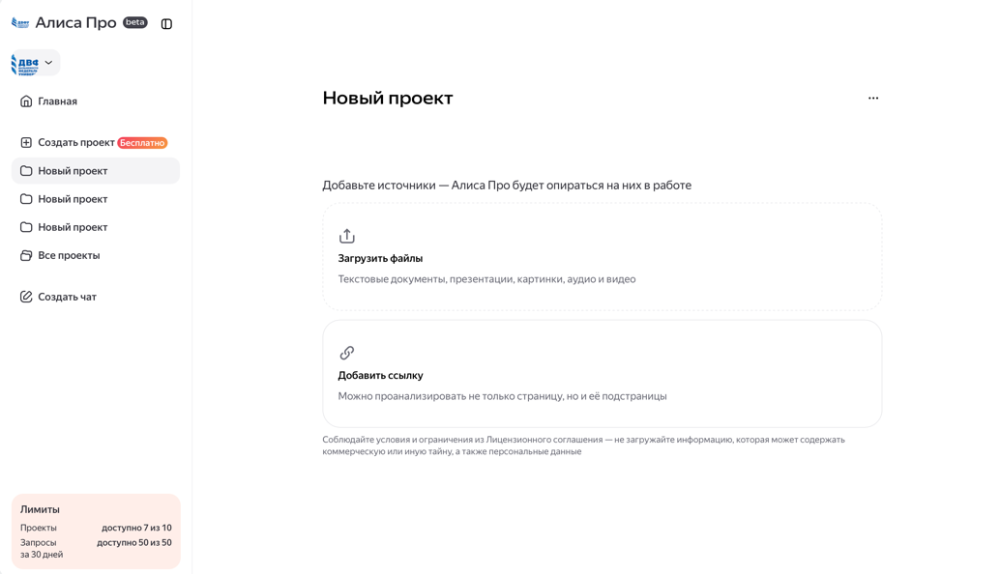

Работа с сервисом «Яндекс Алиса Про»
«Яндекс Проекты» позволяет загружать учебные материалы и работать с ними через нейросеть, получая ответы строго по выбранным документам.
О сервисе
При подготовке к семинару, курсовой работе или экзамену часто возникает необходимость быстро найти ответ в большом количестве лекций, ГОСТов, методических указаний и других учебных материалов.
Ручной просмотр PDF-файлов и текстовых документов требует значительных временных затрат и не всегда является эффективным.
Сервис «Яндекс Алиса Про» позволяет загрузить до 25 учебных файлов и задавать вопросы нейросети, которая формирует ответы исключительно на основе загруженных материалов.
Обычные нейросети могут «галлюцинировать», то есть придумывать несуществующие факты или добавлять информацию, которой нет в исходных документах.
В отличие от них, «Яндекс Алиса Про» ограничивает ответ только содержимым ваших файлов, что обеспечивает более высокую точность и повышает доверие к результату.
Кроме того, сервис позволяет ссылаться на конкретные материалы, сравнивать документы между собой, находить нужные цитаты и извлекать полезную информацию для учебной работы.
Создание проекта
Перейдите на сайт alicepro.yandex.ru и откройте раздел «Проекты».
Нажмите кнопку «Создать проект» и укажите понятное название проекта, например: «Теория игр».

После создания проекта откроется рабочее пространство, внутри которого будут доступны пустое хранилище материалов и окно чата для взаимодействия с нейросетью.

Загрузка материалов
После создания проекта в него можно загрузить необходимые учебные материалы, которые будут использоваться нейросетью для поиска информации и формирования ответов.
В один проект можно загрузить до 25 файлов, включая текстовые документы, PDF-файлы, презентации, а также ссылки на веб-страницы.
Нажмите кнопку «Загрузить материал».
Выберите нужные файлы с компьютера или укажите ссылку на веб-страницу.
При необходимости в процессе дальнейшей работы можно добавлять в проект новые документы.

Работа с чатом (запросы)
После загрузки материалов можно перейти к работе с чатом и задавать вопросы по содержимому файлов.
Вопросы рекомендуется формулировать на русском языке, используя чёткие и конкретные формулировки.
Нейросеть будет отвечать, опираясь только на загруженные документы. Если необходимой информации в них нет, сервис сообщит об этом, а не будет придумывать ответ.
Для получения более точных и полезных ответов рекомендуется использовать следующие приёмы.
Ссылка на конкретный файл.
Пример запроса:
«В файле „Лекция_3.pdf“ найди определение …»
Получение краткой выжимки.
Пример запроса:
«Составь краткий конспект по теме „…“ из всех загруженных материалов»
Сравнение документов.
Пример запроса:
«Сравни требования из ГОСТа 2024 и старого стандарта»
Генерация структуры работы.
Пример запроса:
«Составь план курсовой по теме …, используя введение из файла „методичка.pdf“»
Лайфхаки и возможности
При работе с сервисом «Яндекс Проекты» можно использовать дополнительные приёмы, которые позволяют сделать поиск и обработку информации более удобными и эффективными.
Промпт «показать цитату».
Если вы сомневаетесь в полученном ответе, можно попросить нейросеть привести
прямую цитату из загруженного документа с указанием источника.
Работа с большими документами.
Даже если файл содержит большой объём информации, сервис позволяет быстро
находить нужные сведения без ручного пролистывания всего документа.
Генерация вопросов для самопроверки.
После загрузки материалов можно использовать запрос:
«Сгенерируй 10 вопросов для самопроверки по всем лекциям».
В результате вы получите готовый набор вопросов для повторения материала.
Форматирование результата.
При необходимости можно попросить нейросеть представить ответ в виде
таблицы, списка, краткого плана или другой удобной структуры.
Уточняющие вопросы.
Если полученный ответ оказался слишком общим, можно написать:
«Подробнее» или
«Приведи пример из файла …».
Как поделиться проектом или чатом
Сервис «Яндекс Проекты» позволяет делиться как самим проектом, так и историей работы с ним, что удобно при совместной учебной деятельности, подготовке групповых заданий или отправке материалов преподавателю.
В интерфейсе проекта найдите кнопку «Поделиться».

После этого можно отправить ссылку на проект целиком другим пользователям. Вместе со ссылкой могут быть доступны загруженные материалы и история диалогов.
При предоставлении доступа можно выбрать уровень прав: «только просмотр» или «редактирование».
Режим просмотра позволяет только знакомиться с содержимым проекта, а режим редактирования даёт возможность добавлять материалы, задавать вопросы и продолжать работу с проектом.